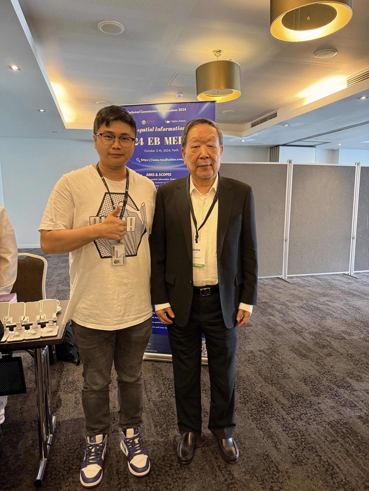

Academic Exchange
Working Behind the Scenes at ISPRS TC IV 2024
Conference service gave me a different view of how geospatial research communities meet, exchange, and move ideas forward.

Conference Service
Working as conference staff at ISPRS TC IV Symposium 2024 was not only logistical work. It was also a way to watch how sessions are shaped, how speakers connect with audiences, and how research communities maintain momentum.
What Stood Out
The meeting brought together remote sensing, geographic information science, spatial data infrastructure, and urban applications. The variety of topics made one thing clear: the value of geospatial research is increasingly tied to integration.
Reflection
A useful academic meeting is not only a schedule of talks. It is a temporary field where people test ideas, find collaborators, and discover which problems are becoming urgent.